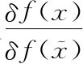
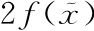
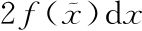
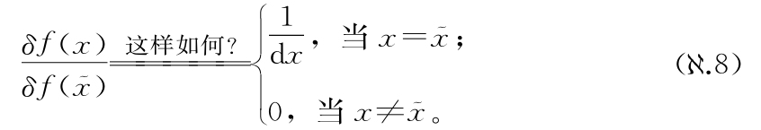
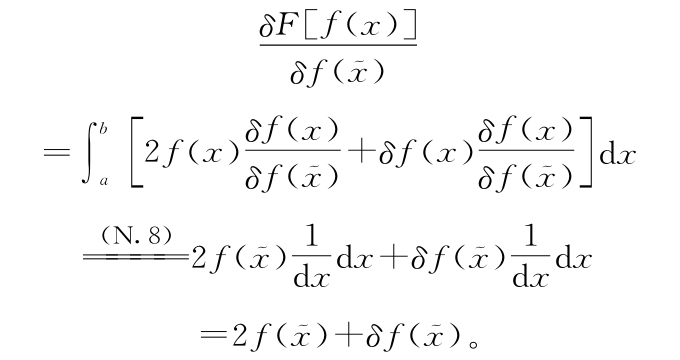
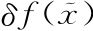
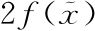
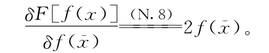
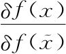

.3.3 无穷前数学，第2部分：更性感的定义.3.3 无穷前数学，第2部分：更性感的定义
.3.3 无穷前数学，第2部分：更性感的定义.3.3 无穷前数学，第2部分：更性感的定义能不能用其他定义替代式（.5），让我们的泛函导数是普通的有限大小的数呢？要回答这个问题，我们得回到定义

）的式（.5）之前的讨论。如果我们想将泛函导数定义为能确保简单的同类相食机器的导数是
这样，而不是
。我们必须怎么做呢？之前的选择给我们留下了不想要dx，因此要使得泛函导数是有限大小的数，最笨（或者说最简单）的办法就是用下面这个定义：
我们来看一下这个选择会给我们什么。接着前面的，我们有

同前面一样，

项要无穷小于
项，因此我们可以直接写成
棒极了！这正是我们想要的有限大小答案。这也并不让人意外，我们注意到将量

）定义为无穷大可以抵消积分本身是大量无穷小之和所起的作用。